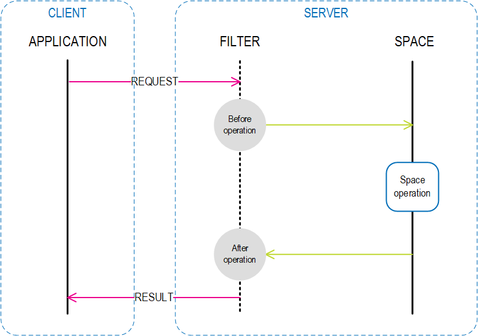

Space Filters are interceptors inside the

The UrlSpaceFactoryBean allows you to configure Space Filters. It uses the space support for a FilterProvider, which is a wrapper for an ISpaceFilter implementation and its characteristics (such as priority, activeWhenBackup). This allows you to provide space filters without changing the space schema.
Space Filters can only be used with embedded spaces.
OpenSpaces comes with delegate implementations of ISpaceFilter, allowing you to use either annotations or explicit method listings in order to use POJOs as space filters.
Here is an example of a simple POJO filter using annotations:
public class SimpleFilter {
@OnFilterInit
void init() {
}
@OnFilterClose
void close() {
}
@BeforeWrite
public void beforeWrite(Message entry) {
// ...
}
@AfterWrite
public void afterWrite(Echo echo) {
// ...
}
@BeforeRead
public void beforeRead(ISpaceFilterEntry entry) {
// ...
}
@BeforeTake
public void beforeTake(Message entry, int operationCode) {
// ...
}
@AfterRead
public void afterRead(Echo echo) {
// ...
}
// called for each matching object
@AfterReadMultiple
public void afterReadMultiple(Echo echo) {
// ...
}
// called for each matching object
@AfterTakeMultiple
public void afterTakeMultiple(Echo echo) {
// ...
}
}
This example (which also applies to explicit method listings, just without the annotations) demonstrates different options to mark methods as filter operation callbacks or filter lifecycle callbacks.
First, note the beforeRead(ISpaceFilterEntry entry) method (the method name can be any name of your choice). The method accepts the same ISpaceFilterEntry that the ISpaceFilter process method uses (which is usually used for extracting the actual template or Entry). With the beforeWrite(Message entry) method, the delegate automatically detects that the first parameter is not an ISpaceFilterEntry, and uses it to extract the actual Entry, which is used to invoke the method with (in our case) Message. When using Entry-type classes in the filter callback, other types that are not assignable to the Entry parameter type, do not cause the filter method callback to be invoked. (In our case, beforeWrite is not invoked for the echo object.)
When either annotations or explicit method listings are used, only a single method per operation can be defined.
The delegate filter shown above, can be configured in Spring using the following XML:
<bean id="simpleFilter" class="test.SimpleFilter" />
<os-core:embedded-space id="space" space-name="mySpace">
<os-core:annotation-adapter-filter priority="2">
<os-core:filter ref="simpleFilter" />
</os-core:annotation-adapter-filter>
</os-core:embedded-space>
<bean id="simpleFilter" class="test.SimpleFilter" />
<bean id="space" class="org.openspaces.core.space.EmbeddedSpaceFactoryBean">
<property name="name" value="space" />
<property name="filterProviders">
<bean class="org.openspaces.core.space.filter.AnnotationFilterFactoryBean">
<property name="filter" ref="simpleFilter" />
<property name="priority" value="2" />
</bean>
</property>
</bean>
The following Spring configuration XML shows how the filter can be configured, using explicit method listings. (In this case, annotations are not required.)
<bean id="simpleFilter" class="test.SimpleFilter" />
<os-core:embedded-space id="space" space-name="spaceAdapterSimpleFilterMethod">
<os-core:method-adapter-filter priority="2"
filter-init="init" filter-close="close"
before-write="beforeWrite" after-write="afterWrite"
before-read="beforeRead" before-take="beforeTake">
<os-core:filter ref="simpleFilter"/>
</os-core:method-adapter-filter>
</os-core:embedded-space>
<bean id="simpleFilter" class="test.SimpleFilter" />
<bean id="space" class="org.openspaces.core.space.EmbeddedSpaceFactoryBean">
<property name="name" value="space" />
<property name="filterProviders">
<bean class="org.openspaces.core.space.filter.MethodFilterFactoryBean">
<property name="filter" ref="simpleFilter" />
<proeprty name="priority" value="2" />
<property name="filterInit" value="init" />
<property name="filterClose" value="close" />
<property name="beforeWrite" value="beforeWrite" />
<property name="afterWrite" value="afterWrite" />
<property name="beforeRead" value="beforeRead" />
<property name="beforeTake" value="beforeTake" />
</bean>
</property>
</bean>
Delegator filters cannot be used to change the object. If you need to change the object, implement the ISpaceFilter interface.
An actual implementation of the ISpaceFilter interface can be provided. Following is a very simple example. Note that in the init method you get access to the related Space.
public class SimpleFilter implements ISpaceFilter {
public void init(IJSpace space, String filterId, String url, int priority)
throws RuntimeException {
// perform operations on init
}
public void process(SpaceContext context, ISpaceFilterEntry entry, int operationCode)
throws RuntimeException {
// process single entry filter operations
}
public void process(SpaceContext context, ISpaceFilterEntry[] entries, int operationCode)
throws RuntimeException {
// process multiple entries filter operation (such as update)
}
public void close() throws RuntimeException {
// perform operation when filter closes
}
}
The full list of filter entries is shown below:
| Before write operation | 0
|
| After write operation | 1
|
| Before read operation | 2
|
| Before take operation | 3
|
| Before notify register operation | 4
|
| Before authentication operation on a secured space | 6
|
| Before update operation | 9
|
| After update operation | 10
|
| Before readMultiple operation | 11
|
| After readMultiple operation | 12
|
| Before takeMultiple operation | 13
|
| After takeMultiple operation | 14
|
| Before notify trigger operation, indicates that a matched notify template was found to the current entry event | 15
|
| After notify trigger operation, indicates that a notify trigger was successful | 16
|
| Before all notify trigger operation, indicates that at least one notify template is matched to the current entry event | 17
|
| After all notify trigger operation, indicates that all notify templates that are matched to the current entry event were triggered and returned or failed. @see net.jini.core.event.RemoteEventListener#notify(net.jini.core.event.RemoteEvent) | 18
|
| Before execute operation | 20
|
| After execute operation | 21
|
| After read operation | 22
|
| After take operation | 23
|
| Before change operation | 24
|
| After change operation | 25
|
| Called before entry remove due to lease expression or lease cancel. @see net.jini.core.lease.Lease#cancel() | 52
|
| Called after entry remove due to lease expression or lease cancel. @see net.jini.core.lease.Lease#cancel() | 53
|
For example, the following Spring configuration registers this filter for before write (0), before read (2), and before take (3) operations:
<bean id="simpleFilter" class="eg.SimpleFilter" />
<os-core:embedded-space id="space" space-name="mySpace">
<os-core:space-filter priority="2">
<os-core:filter ref="simpleFilter" />
<os-core:operation code="0" />
<os-core:operation code="2" />
<os-core:operation code="3" />
</os-core:space-filter>
</os-core:embedded-space>
<bean id="simpleFilter" class="eg.SimpleFilter" />
<bean id="space" class="org.openspaces.core.space.EmbeddedSpaceFactoryBean">
<property name="name" value="space" />
<property name="filterProviders">
<list>
<bean class="org.openspaces.core.space.filter.SpaceFilterProviderFactory">
<property name="filter" ref="simpleFilter" />
<property name="priority" value="2" />
<property name="operationCodes">
<list>
<value>0</value>
<value>2</value>
<value>3</value>
</list>
</property>
</bean>
</list>
</property>
</bean>
Accessing a space within a space filter can cause a cycle construction exception, since the space can not be injected to the filter (because the space was not constructed yet). There are options to solve this with pure Spring, but OpenSpaces provides a simpler option by using the GigaSpacesLateContext annotation.
The UrlSpaceFactoryBean allows you to configure Cluster Replication Filters. It uses the space support for a ReplicationFilterProvider which is a wrapper for an IReplicationFilter implementation and its characteristics (such as activeWhenBackup). This allows you to provide space replication filters without changing the space schema.
Space replication filters can only be used with embedded spaces.
A simple implementation of IReplicationFilter is shown below:
public class SimpleReplicationFilter implements IReplicationFilter {
public void init(IJSpace space, String paramUrl, ReplicationPolicy replicationPolicy) {
// init logic here
}
public void process(int direction, IReplicationFilterEntry replicationFilterEntry, String remoteSpaceMemberName) {
// process logic here
// In order to change the object you should use replicationFilterEntry setFileldValue method
}
public void close() {
// close logic here
}
}
The following configuration shows how it can be injected:
<bean id="simpleReplicationFilter" class="eg.SimpleReplicationFilter" />
<os-core:embedded-space id="space" space-name="mySpace">
<os-core:space-replication-filter>
<os-core:input-filter ref="simpleReplicationFilter" />
<os-core:output-filter ref="simpleReplicationFilter" />
</os-core:space-replication-filter>
</os-core:embedded-space>
<bean id="simpleReplicationFilter" class="eg.SimpleReplicationFilter" />
<bean id="space" class="org.openspaces.core.space.EmbeddedSpaceFactoryBean">
<property name="name" value="space" />
<property name="replicationFilterProvider">
<bean class="org.openspaces.core.space.filter.replication.DefaultReplicationFilterProviderFactory">
<property name="inputFilter" ref="simpleReplicationFilter" />
<property name="outputFilter" ref="simpleReplicationFilter" />
</bean>
</property>
</bean>